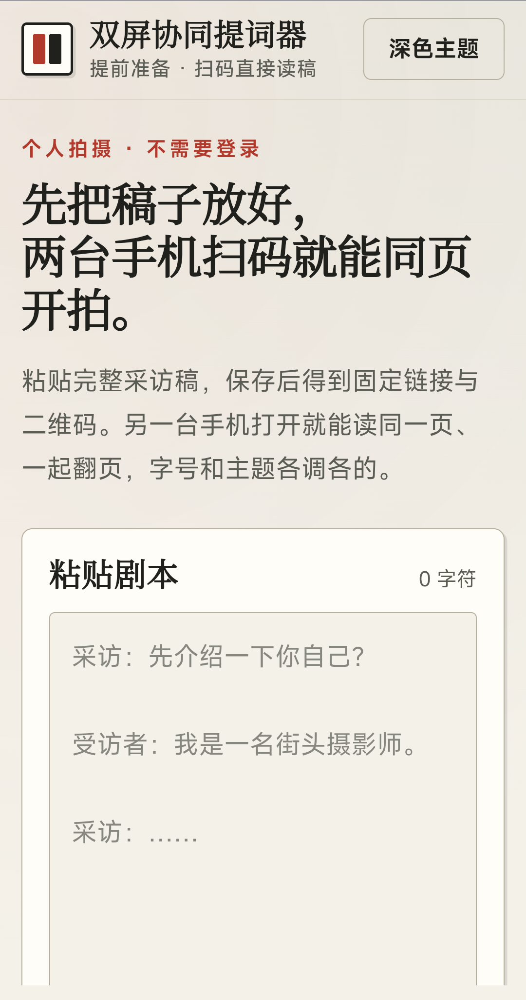
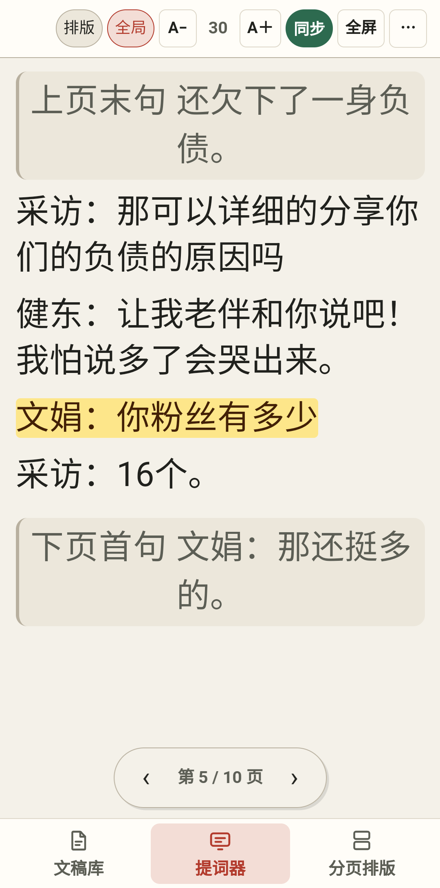
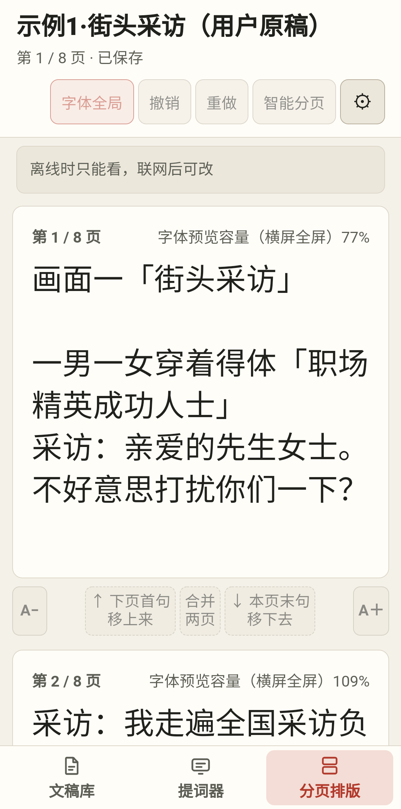

拍采访类短视频时，台词以前只能一句一句递：递纸、口耳相传，或者旁边站个人临时提词。演员记不住，采访的人一边拍还要一边确认「念到哪一句了」，一条片子反复重来。 现在把稿子粘一次，两台手机打开同一个链接就是同一页——一台摆在演员面前看自己的词，一台在采访人手里看提问、顺手翻页。
拍摄用的第三台手机只负责拍，不装本软件、不参与同步，避免相机和提词抢前台。
装好以后应用需要一条分享码才能进入稿库：没有码可以打开界面、看得到排版，但看不到云端稿件、也存不了新稿。
底部三个 tab 从左到右就是使用顺序：先建稿，再开拍，最后调排版。



粘一次 → 扫一次 → 两台各就各位，开拍时谁也不用递词。
整篇采访稿粘进去，选「直接用原稿」或「AI 智能分页」，按说话人把台词分段，保存后得到一条固定链接和一张二维码。
第二台手机扫二维码或打开同一条带码链接，两台进入同一页台词。不用注册、不选角色、不分主从。
一台摆在演员面前看自己的词，一台在采访人手里看提问、点「下一页」、调字号、切横屏；两台始终同页、同字号、同横屏状态。
Android 8.0 及以上。iOS 未打包。